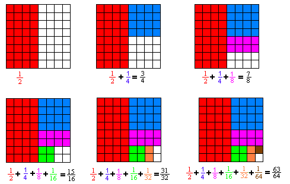
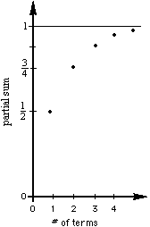
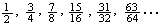
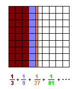
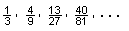
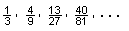
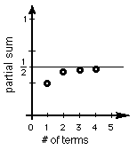

Answers for Chapter 1 Sample Problems

Chris, at age 6, told me that 1/2 + 1/4 + 1/8 = (3 1/2)/4 = 7/8 ! I encourage my
students to write the fractions for the partial sums different ways. Kirsten's
(see her picture in the science to math) mother told me her 2nd grade teacher
was impressed with the fact that Kirsten was the only person in her class who
could add 3 fractions. The teacher didn't know that Kirsten could also do the infinite
series at that time. Kirsten's work about 1/3 + 1/9 + 1/27 + ... is on Don's
first videotape.
The partial sums are 
and the graph of the first 5 is shown at the left.
The fractions we're adding: they are getting smaller. The tops are 1. The
bottoms are doubled each time or they are powers of 2. 8= 2^3, 16 = 2^4, and so
on.
The partial sums: They are getting bigger. If you add the top and bottom, you
get the top number in the next partial sum. The top number is always 1 less than
the bottom number. The bottom number is always a power of 2. We can write the
nth partial sum as (2^n - 1)/2^n. Some people say that there is always one of
the fraction left over, so the nth partial sum can be written as 1 - 1/(2^n). I
say the infinite series  goes
to 1. (As n-> infinity, 1/(2^n) ->0, so 1-1/(2^n)->1 and
(2^n-1)/2^n -> 1 and mathematicians say the limit of these is 1; and the
limit of this series is 1).
goes
to 1. (As n-> infinity, 1/(2^n) ->0, so 1-1/(2^n)->1 and
(2^n-1)/2^n -> 1 and mathematicians say the limit of these is 1; and the
limit of this series is 1).
(With young people I don't introduce the word limit right away).
[Barbara, Don's friend, July, 2001, asked Don what this curve was, a
parabola? Don thought about this and realized it was an exponential function y =
1-1/2x. Good question, Barb!]
The infinite series  goes to 1/2. The partial sums are 
goes to 1/2. The partial sums are 
Lucas, a 6th grader, saw that
each partial sum is 1/2 of the fraction less than 1/2; for example, 1/2 -
(1/2)x(1/81) = (40 1/2)/81 - (1/2)/81 = 40/81 , then proceeded to generalize
this to 1/2 - (1/2)x(1/3^n) and as n -> infinity, (1/3^n) -> 0 and the
expression 1/2 - (1/2)x(1/3^n) goes to 1/2.
A high school teacher in CO sent me a letter about showing my videotape #1 to
his class. After viewing it, they wanted to get some 6 and 7 year olds to try it
on them! One of his students, Lisa, came up with this way of doing 1/4 + 1/16 +
1/64 + ... (see Don's worksheet book for this and the generalization of  ).
).
A program to find
In Basic (prints the first 20 partial sums):